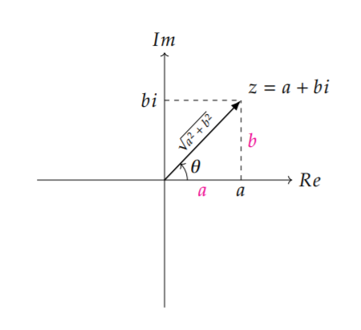

四元数与欧拉角
四元数的介绍：
阅读进度 → 三维空间的旋转
quaternion.pdf
阅读笔记：
复数
1.3 复数相乘与2D旋转
与复数 z=a+bi 相乘代表着[ab−ba] 矩阵所作出的变换，将矩阵中的每一个元素都除以模长，可以得到以下变换：
[ab−ba]=a2+b2∗[a2+b2aa2+b2ba2+b2−ba2+b2a]

从复平面观察可以得到，∥z∥=a2+b2 且有 θ=arctan(ab) ，原本的矩阵转换为了两个变换矩阵的复合，其中左边的[∥z∥00∥z∥]是缩放矩阵，而右边的[cos(θ)sin(θ)−sin(θ)cos(θ)]则是2D旋转矩阵。
1.4 旋转的复合
znet=(cos(θ)+isin(θ))(cos(ϕ)+isin(ϕ))=cos(θ+ϕ)+isin(θ+ϕ)
对两个2D旋转进行复合时，所得的变换 znet 仍是一个旋转，而且与施加的次序无关。这个等效变换的旋转角是两个旋转角之和。
2 三维空间中的旋转
轴角式(Axis-angle) 旋转：给定旋转的转轴向量u=(x,y,z)T以及旋转的角度θ，但实际在三维空间中表示方向只需要两个自由度（或者说两个变量），即与两个坐标轴的夹角，转轴向量可以除以模长转换为特定方向上的单位向量。
2.1 旋转的分解
首先将要旋转的向量在垂直和平行于转轴的方向上进行分解，有v=v∥+v⊥ ，分别进行旋转后再相加就能得到旋转后的结果。
根据正交投影公式，可以得出
\begin{equation*}\begin{aligned}v_\parallel&=proj_{\vec{u}}(\vec{v})\\&=\frac{\vec{u}\cdot\vec{v}}{\vec{u}\cdot\vec{u}}\vec{u}\\&=(\vec{u}\cdot\vec{v})\vec{u}\end{aligned}\end{equation*}
又由于v=v∥+v⊥，可以得到垂直于转轴方向有
\begin{equation}\begin{aligned}\vec{v_{\perp}}&=\vec{v}-\vec{v_{\parallel}}\\&=\vec{v}-(\vec{u}\cdot\vec{v})\vec{u}\end{aligned}\end{equation}
2.3 垂直分量的旋转
在与u垂直平面上的分量旋转角度θ，可对结果进行下述表示，先构造一个正交于转轴向量和v⊥的向量w：
\begin{equation}\vec{w}=\vec{u}\times\vec{v_\perp}\end{equation}
可以得到正交于旋转轴u的分量v⊥，旋转角度θ后得到的v⊥′：
\begin{equation}\begin{aligned}\vec{v_\perp^\prime}&=\cos{\theta}\vec{v_\perp}+\sin{\theta}\vec{w}\\&=\cos{\theta}\vec{v_\perp}+\sin{\theta}(\vec{u}\times\vec{v_\perp})\end{aligned}\end{equation}
2.4 v的旋转
to be continued…
万向节死锁
包含了万向节死锁的部分问题，以Unity为例的回答
为什么Unity3d旋转默认采用了有万向节死锁的欧拉角，而不用四元数？
bonus_gimbal_lock.pdf
{kind=link}